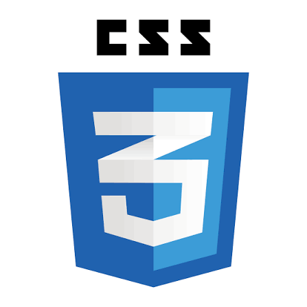

Data Analytics
Using data, SQL, Python, visualization, and analytical thinking to understand information and support better decisions.
TECHNOLOGY • DATA • DIGITAL SOLUTIONS
Where data meets technology — and ideas become solutions.
Data Analytics student with a background in Computer Science and a growing interest in technology, software, databases, networking, analytics, and digital solutions.
Python • SQL • HTML • CSS • JavaScript • Data Analytics • Networking
aryan@portfolio:~
Building at the intersection of technology, data analytics, and business.
I enjoy understanding problems, working with information, and using technology to create practical solutions.
My academic and technical experience includes programming, database design, responsive web development, networking, data analysis, mobile development, and user-focused digital solutions.
Alongside my technical development, my professional experience has strengthened my communication, leadership, analytical thinking, problem solving, and ability to work effectively in fast-paced environments.
The areas I am actively developing through education, projects, and practical experience.
Using data, SQL, Python, visualization, and analytical thinking to understand information and support better decisions.
Programming, software concepts, databases, problem solving, systems, and computational thinking.
Building responsive websites and practical technology solutions with a focus on usability, accessibility, and real-world needs.
A selection of technical projects demonstrating my development across databases, web technologies, programming, networking, and problem solving.
DATABASE & DATA
Designed a database solution for hotel management, translating business requirements into an organized data structure and practical technical system.
WEB & USER EXPERIENCE
Contributed to the redesign of Dalhousie University's Health and Wellness web content with a focus on usability, accessibility, information organization, and user-focused design.
FRONT-END DEVELOPMENT
Designed and developed this responsive technology portfolio using HTML, CSS, Flexbox, CSS Grid, media queries, and JavaScript.
NETWORKING
Completed practical exercises involving network connectivity, switching, routing, packet analysis, configuration, and troubleshooting.
Technologies and technical areas I am building experience with through coursework and projects.



Experience strengthening my understanding of technology, operations, leadership, systems, and analytical problem solving.
Technology & Client Solutions
Support customers with mobile technology, home internet, smart home solutions, device onboarding, data transfers, account troubleshooting, and service configuration.
Work with CRM, point-of-sale, account, and authorization systems while maintaining accuracy, privacy, and compliance.
FinTech & Leadership
Worked with customers to understand financial needs and recommend digital banking, credit, and savings products.
Trained and mentored new representatives, strengthening leadership, communication, product knowledge, and performance-focused problem solving.
Operations & Systems
Supported high-volume operations involving customer information, reservations, billing, inventory, and service requirements.
Developed experience in operational decision-making, process efficiency, issue resolution, and managing information across multiple systems.
Leadership & Operations
Led teams and coordinated clients, production crews, vendors, and venue personnel during large-scale events.
Developed strong skills in leadership, scheduling, risk management, prioritization, communication, and fast-paced problem solving.
Academic experience supporting my development across data analytics, computer science, programming, databases, and technology.
FIELD OF STUDY
Data Analysis • SQL • Python • Data Visualization
Developing practical skills in data analysis, database management, visualization, programming, and interpreting information to support technology and business decisions.
FIELD OF STUDY
Programming • Database Systems • Web Development • Software Development
Developed experience in programming, database design, web development, mobile development, networking, software concepts, and technical problem solving.
Click a certification to view the certificate.
LET'S CONNECT
I am continuing to build my experience across data analytics, computer science, software, networking, and business-focused technology.
Connect with Me on LinkedIn